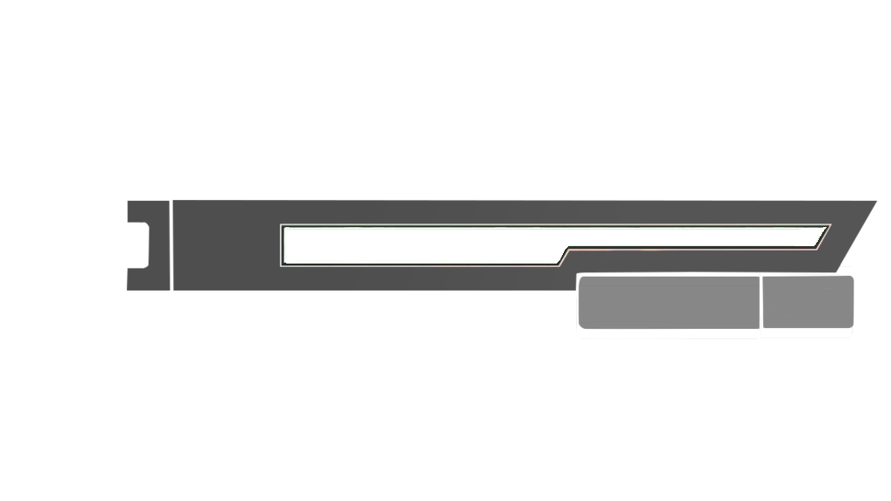

<ion-content (click)="onUserInteraction()">
  <div class="video-container" *ngIf="showVideo; else noVideo">
    <video #videoPlayer width="100%" height="auto" (ended)="onVideoEnded()">
      <source src="assets/videos/SAO Opening.mp4" type="video/mp4">
    </video>
    <div *ngIf="!isPlaying" class="pause-icon">
      <ion-icon name="play-circle"></ion-icon>
    </div>
  </div>

  <ng-template #noVideo>
    
    <div *ngFor="let user of loggedUserInfoFromFirebase" class="profile">
      <ion-label (click)="handlePlayerLevelAndXp()" class="profileName">{{user.userName}}</ion-label>
    </div>
    <ion-progress-bar [value]="currentHP / maxHP" color="{{HpBarColor}}">
    </ion-progress-bar>
  </ng-template>
</ion-content>
